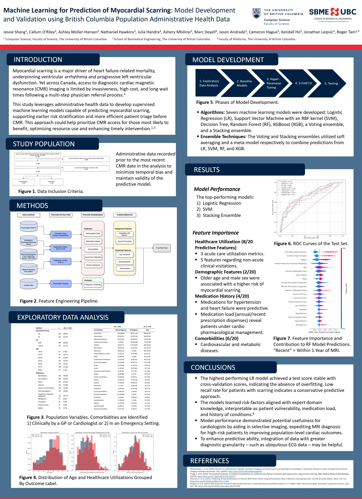

Jan 2025 - May 2025 / SBME Research Symposium 2025
Technologies: Python, Pandas, Numpy, Sklearn
Supervisor: Dr. Roger Tam

Abstract
Myocardial scarring underpins adverse cardiovascular outcomes but can only be detected using costly cardiac magnetic resonance (CMR) imaging. This study investigates the application of machine learning on population-based administrative health data to develop and validate predictive models for myocardial scarring, aiming to assess their accuracy, reliability, and clinical utility in improving resource allocation and patient outcomes.Methods
A cohort of 724 adult patients with CMRs (2006-2023) was constructed from linked administrative databases in British Columbia, Canada. Sixty-one predictors were extracted, including demographic features, comorbidity history, medication use, and both acute and clinical healthcare utilization. The data was split into an 85/15 training and testing set. We trained and tuned the models using 5-fold cross-validation and evaluated seven machine learning models: Logistic Regression, Support Vector Machine with an RBF kernel, Decision Tree, Random Forest, XGBoost, a Voting, and a Stacking Ensemble of 4 classifiers. Model performance was evaluated using area under the Receiver Operating Characteristic curve (AUROC).Results
Myocardial scarring was present in 282 of 724 patients (39.0%). The top-performing models were Logistic Regression (AUC: 0.75), SVM (AUC: 0.75), and the Stacking Ensemble (AUC: 0.74). The most important predictors, including myocardial infarction, ischemic heart disease, age, and statin use, were consistent with established risk factors for the development of myocardial scarring.Conclusions
Machine learning can be applied to administrative health datasets to derive interpretable myocardial scarring risk predictions. The top three performing models in this analysis exhibited consistent predictive ability from the administrative health data features. To improve predictive accuracy, future models could incorporate additional data, from other sources such as electrocardiograms (ECG) and echocardiograms.Ongoing Work
Training models with integrated administrative health data and ECG data
Training multi-class models to stratify patient risk